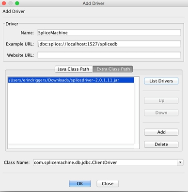

This topic walks you through installing and configuring the SQuirreL SQL Client for use with your Splice Machine database, in the following sections:
The SQuirreL SQL Client is an open source tool written in Java that provides a graphical interface that allows you to interact with your database in various ways, including:
This section presents installation instructions for the SQuirreL SQL Client for MacOS and Windows computers.
Follow these steps to download and install SQuirreL on your MacOS computer:
Download the installer:
Download SQuirreL SQL for OSX from http://squirrel-sql.sourceforge.net/.
Run the installer:
Double-click the installer to run it, and accept default settings (click the Next buttons) in the screens that are presented, until you see the Select Packs screen.
Select packs:
You only need to select the Derby Plugin, and we recommend also selecting the Oracle, SQL Server, and MySQL packs if you wish to perform any comparison tests,
Once you've made your selections, click the Next button to continue the installation.
Complete the installation:
Accept the defaults in the remaining screens to complete the installation.
Before installing SQuirreL on your Windows computer, make sure that you have version 1.7 or greater of the Java JRE installed. Then follow these steps to download and install SQuirreL on your Windows computer:
Download the installer:
Download SQuirreL SQL for Windows from http://squirrel-sql.sourceforge.net/.
Run the installer:
Open a Windows command prompt in the directory to which the installer was downloaded, and enter the following command. Substitute the exact name of the download file in the command:
java -jar squirrel-sql-<version>-standard.jar
For example:
java-jar squirrel-sql-3.5.3-standard.jar
Accept default settings (click the Next buttons) in the screens that are presented, until you see the Select Packs screen.
Select packs:
You only need to select the Derby Plugin, and we recommend also selecting the Oracle, SQL Server, and MySQL packs if you wish to perform any comparison tests,
Once you've made your selections, click the Next button to continue the installation.
Complete the installation:
Accept the defaults in the remaining screens to complete the installation.
Before you can use SQuirreL with Splice Machine, you must create a new driver definition in SQuirreL for Splice Machine. Follow these steps:
Create the Splice Machine driver definition:
In the Drivers tab, click the blue + sign Create a New Driver icon. The Add Driver window displays:

Specify the driver name and example URL:
In the Add Driver window, make these changes, which are shown in the image above:
IMPORTANT: You must use the Splice Machine JDBC driver; other drivers will not work correctly.
Add the driver path and class name:
Still in the Add Driver window, also make these changes:
Click the Extra Class Path button to display the extra class tab. Click the Add button and navigate to the Splice jar file. which you'll find it in the jdbc-driver folder under the splicemachine directory. Typical locations are:
| OS | Location |
|---|---|
| MacOS | \splicemachine\jdbc-driver\db-client-2.0.1.18.jar |
| Windows | C:\splicemachine\jdbc-driver\db-client-2.0.1.18.jar |
NOTE: Remember to substitute the actual Splice Machine version installed on your computer for <version>.
At the bottom of the Add Driver window, select the Splice Machine driver from the ClassName drop-down:
com.splicemachine.db.jdbc.ClientDriver
Create an instance of the Splice client:
Click the Aliases tab in the SQuirreL window, and then click the Create new Alias (blue + sign) button. Enter information into the Add Alias screen as shown, using these values:
| Field | Value to use |
|---|---|
| Name | A name for your connection; for example, Test Database. |
| Driver | Select the SpliceMachine driver in the drop-down list. |
| URL |
If you're running the standalone version of Splice Machine, use: jdbc:splice://localhost:1527/splicedb If you're running on a cluster, specify your server name in place of localhost. |
| User Name | splice |
| Password | admin |
Test your settings:
To test that your driver settings are correct, you need to make sure that Splice Machine is started on your local computer. Then click the Test button in the Add Alias screen to verify that the driver is working properly.
In the Connect to: screen that displays, enter splice as the User ID and admin as the password, and click the Connect button.
You should see the successful connection confirmation screen.
When you're done configuring SQuirreL, you can connect to a Splice Machine database by following these steps:
Start the SQuirreL client
Select the Splice instance:
In the SQuirreL screen, select the Aliases tab, double-click the Splice instance to which you want to connect. For example:
Connect:
The Connect pop-up window displays. Simply accept the default user and password values (these are currently ignored), and click the Connect button. You'll see your schema and tables displayed:
Enter queries:
To enter SQL queries, select the SQL tab (next to the Objects tab button).
You can leverage your existing Splice Local alias to connect to an instance of SpliceDb running on an AWS EC2 cluster.
To do so, you need to create an SSH tunnel that forwards the packets sent on port 1527 to localhost port 1527 on your AWS instance. Use the following command line:
ssh -i ~/.ssh/<aws-key-pair>.pem -v -N -p 22 -L1527:localhost:1527 ubuntu@<aws public hostname or public IP>
Then connect to your instance and enter queries as usual.